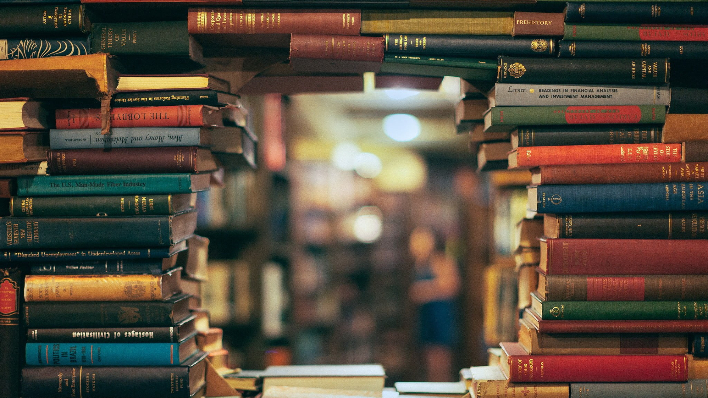

Sebelumnya, aku mau sedikit bahas apa itu Liber Blog.
Liber, dalam bahasa latin artinya buku. Jadi, Liber Blog adalah Blog Buku. Hehe, simple!
Disini, aku akan sedikit menuangkan tulisan singkat dan un-faedah ini.
Hai gais! This is a magic book. Jika berminat, silakan berdo'a ya gais.
Buku terdiri dari berbagai jenis dan genre. Aku sangat suka membaca segala jenis buku, kalau kalian suka baca jenis buku apa? Yuk, kita perbanyak baca buku gais, lumayan-lah menambah wawasan.
Sekian! Kali ini, aku cuma mau nulis ini. Next time, aku akan perbanyak tulisan in this blog.
Mohon maaf, karena masih banyak kesalahan dalam segi tampilan dan isi.